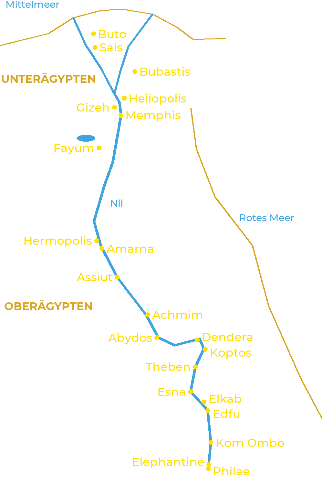

Das alte Ägypten erstreckte sich über mehr als tausend Kilometer entlang des Nils. Im Norden teilt
sich der Fluss in mehrere Arme und bildet das Delta: Das ist Unterägypten. Im Süden liegt das Tal,
Oberägypten, bis zum ersten Katarakt bei Assuan. Jede Stadt hatte ihre Götter, und die größten
religiösen Zentren gaben den Kosmogonien ihren Namen.

Die wichtigsten Kultzentren, vom Delta bis zum ersten Katarakt
Unterägypten
Buto: Wadjet, die Kobragöttin und Schutzherrin des Nordens.
Sais: Neith; Hauptstadt der 26. Dynastie.
Bubastis: Bastet, deren großes Fest Herodot beschrieb.
Heliopolis: Atum und Re; Wiege der am weitesten verbreiteten Kosmogonie.
Gizeh: die großen Pyramiden und die Sphinx, als Harmachis verehrt.
Memphis: Ptah, Sachmet, Nefertem und der Apis-Stier; Nekropole des Sokar in Sakkara.
Fayum: Sobek und seine heiligen Krokodile.
Oberägypten
Hermopolis: Thot und die Achtheit.
Amarna: Aton; die von Echnaton gegründete Hauptstadt.
Assiut: Upuaut, „der die Wege öffnet“.
Achmim und Koptos: Min, Gott der Fruchtbarkeit und der Wüstenpisten.
Abydos: Osiris, dessen Mysterien dort gefeiert wurden.
Dendera: Hathor.
Theben: Amun, Mut und Chons (Karnak und Luxor), Month; königliche Nekropolen am Westufer.
Esna: Chnum, Neith und Heka.
Elkab: Nechbet, die Geiergöttin und Schutzherrin des Südens.
Edfu: Horus.
Kom Ombo: Sobek und Horus der Ältere in einem Doppeltempel.
Elephantine: Chnum, Satet und Anuket, Hüter der Flut.
Philae: Isis, deren Tempel bis ins 6. Jahrhundert geöffnet blieb.